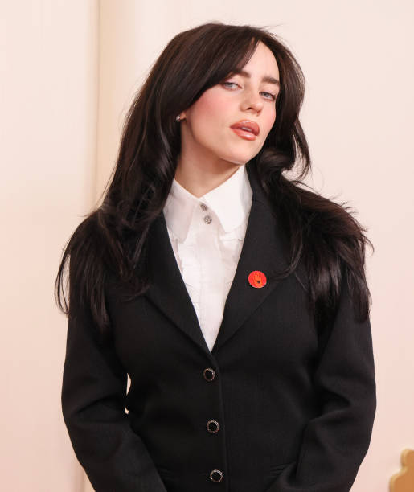
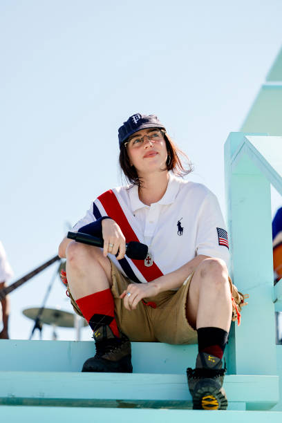
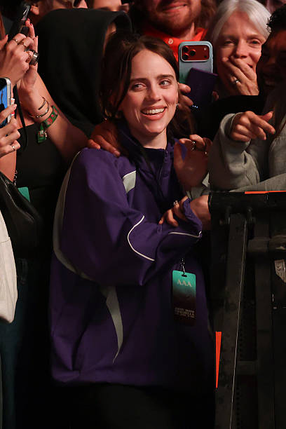
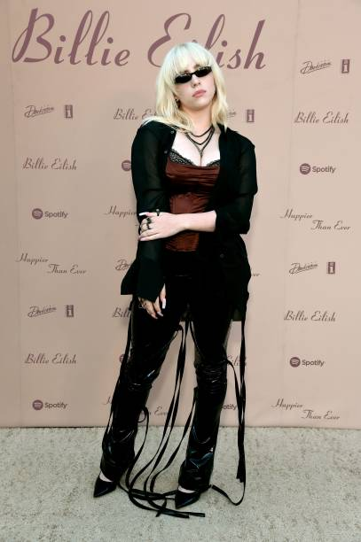
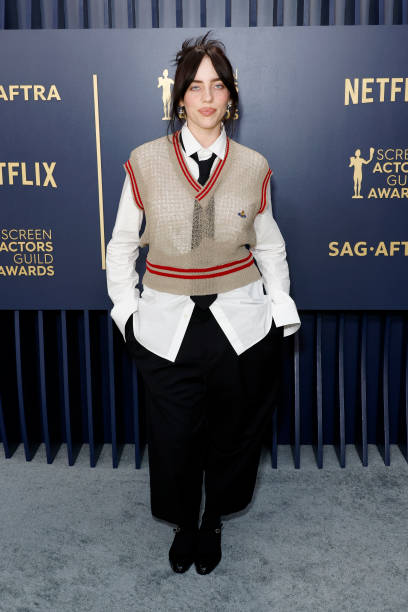
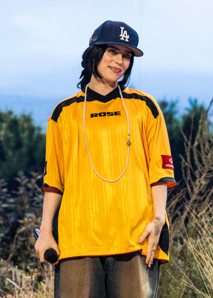
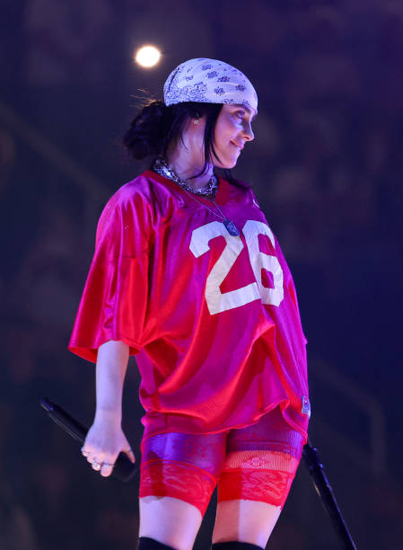
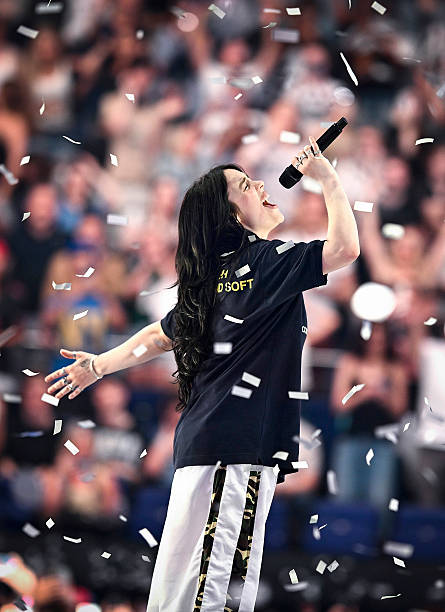
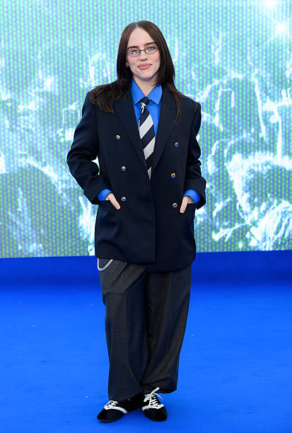
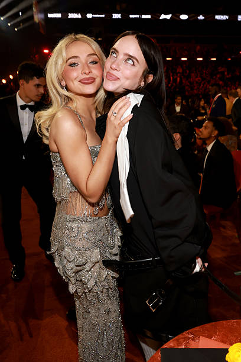
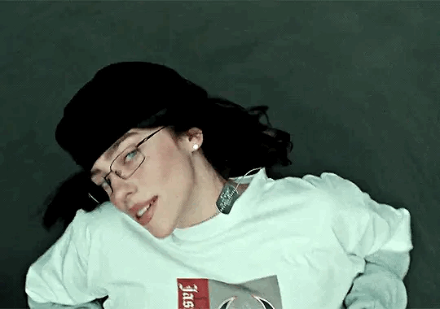
8 kwietnia 2024 poinformowała, że 17 maja 2024 wyda swój trzeci album studyjny pt. Hit Me Hard and Soft[91]. Album zawiera 10 utworów. Krążek zajął drugie miejsce na liście Billboard 200, a każdy z utworów na nim zawarty znalazł się na liście Billboard Hot 100[92][92]. Wydawnictwo zdobyło szczyt list przebojów w około dwudziestu krajach w tym m.in.: Australii, Kanadzie, Polsce, Hiszpanii oraz Wielkiej Brytanii. 29 kwietnia została ogłoszona trasa koncertowa promująca album, której rozpoczęcie planowane jest na 29 września 2024, a zakończenie na 23 Listopada 2025[93]. 2 sierpnia 2024 Eilish pojawiła się gościnnie w remiksie utworu Guess autorstwa Charli XCX[94]. 11 sierpnia 2024 wykonała utwór „Birds of a Feather” w trakcie ceremonii zamknięcia Letnich Igrzysk Olimpijskich.
Teledysk do „when the party's over” to jeden z najbardziej ikonicznych i przerażających obrazów w karierze Billie Eilish. Klip wyreżyserował Carlos López Estrada, jednak to 16-letnia wówczas Billie była autorką całego konceptu kreatywnego. 1. Rysunek od fanki jako impuls Wszystko zaczęło się od spotkania z fanami. Jedna z dziewczyn wręczyła Billie odręczny rysunek przedstawiający piosenkarkę z całkowicie czarnymi oczami, z których wypływał ciemny tusz. Artystka była tak zahipnotyzowana tym obrazem, że natychmiast zadzwoniła do swojego zespołu, mówiąc: „Wiem dokładnie, jak musi wyglądać ten teledysk. Chcę być ubrana cała na biało, w białym pokoju i chcę płakać czarną mazią”. 2. Zero CGI Najbardziej niesamowitym faktem jest to, że w teledysku nie użyto efektów komputerowych (CGI) do stworzenia czarnych łez. Wszystko, co widzisz na ekranie, wydarzyło się naprawdę za pomocą tzw. efektów praktycznych. • Przepis na czarną maź: Mikstura, którą Billie pije ze szklanki, a która później wypływa z jej oczu, powstała na bazie wody, płynu do soczewek kontaktowych oraz węgla aktywnego z dodatkiem ciemnego barwnika spożywczego. Napój w szklance był nieco mniej gęsty, żeby artystka mogła go bezpiecznie i naturalnie przełknąć. • System rurek na twarzy: Aby płyn wylewał się z jej oczu, specjaliści od efektów specjalnych (SFX) przykleili do czoła Billie dwie cienkie, lateksowe rurki, które kończyły się dokładnie w kącikach jej oczu. Rurki były podłączone do pomp sterowanych przez ekipę za kulisami. W postprodukcji cyfrowo wymazano jedynie te rurki z jej czoła – sam płyn zalewający twarz był w 100% prawdziwy.
| l.p. | nazwa | ranking |
|---|---|---|
| 1. | Wildflower | 4/5 |
| 2. | Bad guy | 3/5 |